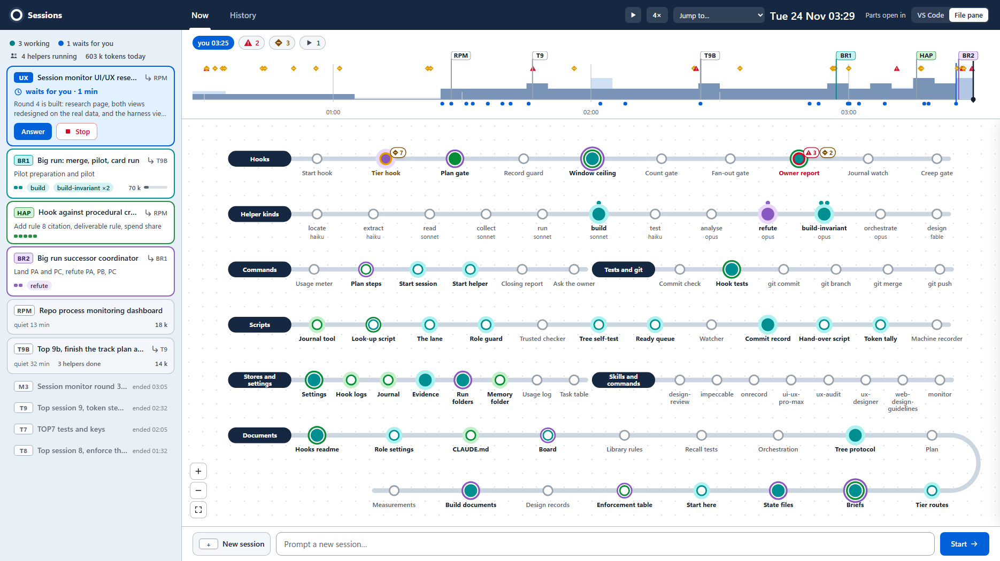
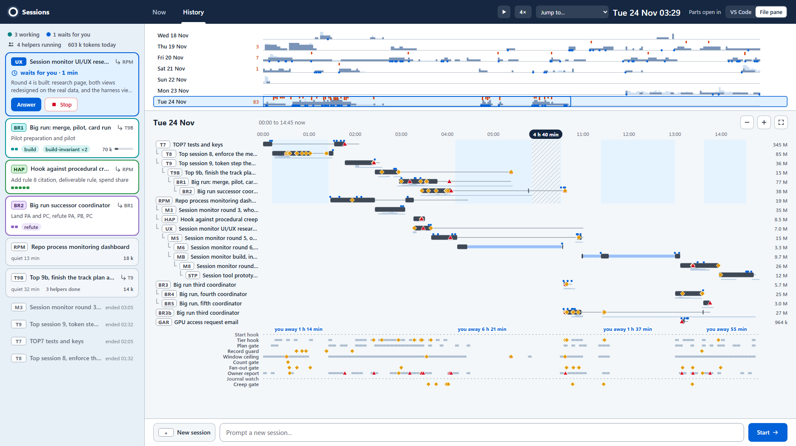
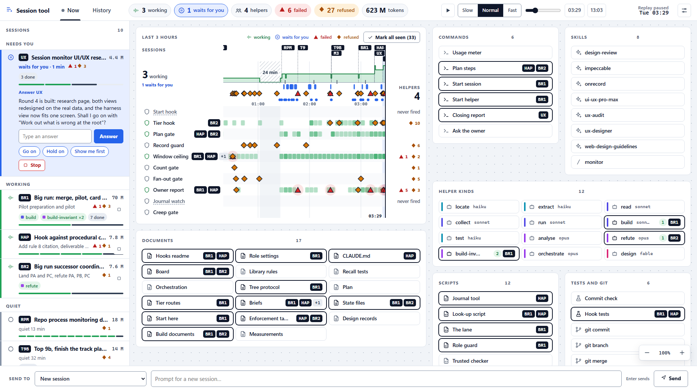
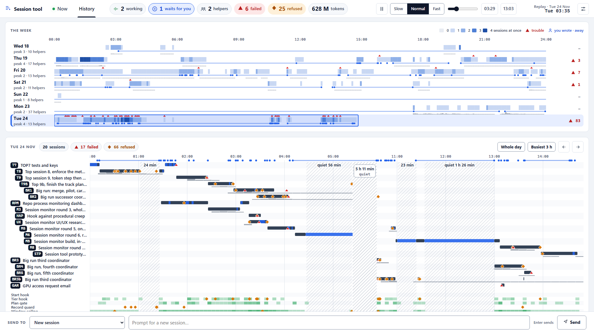
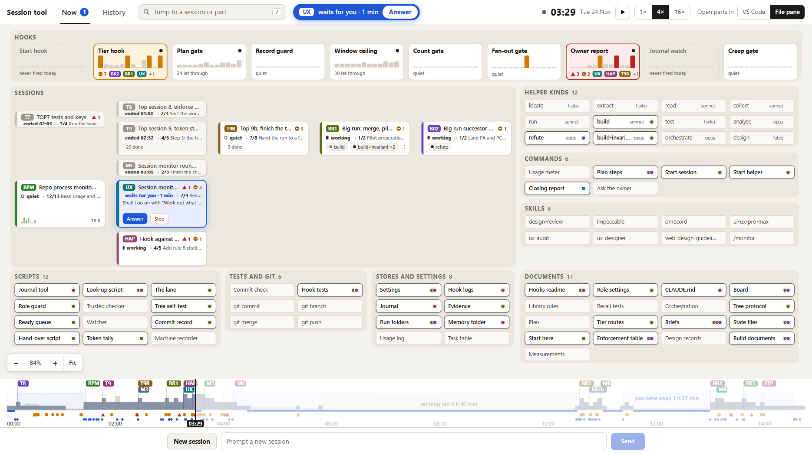
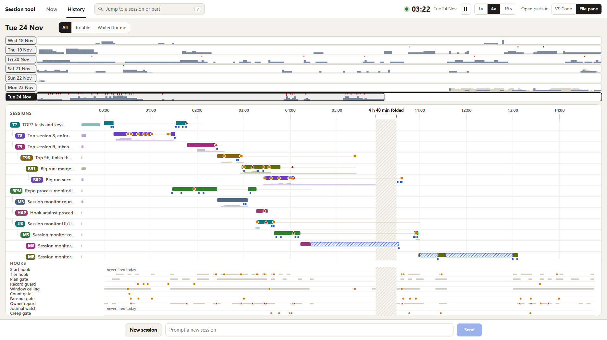
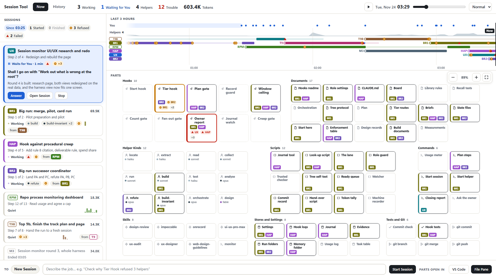
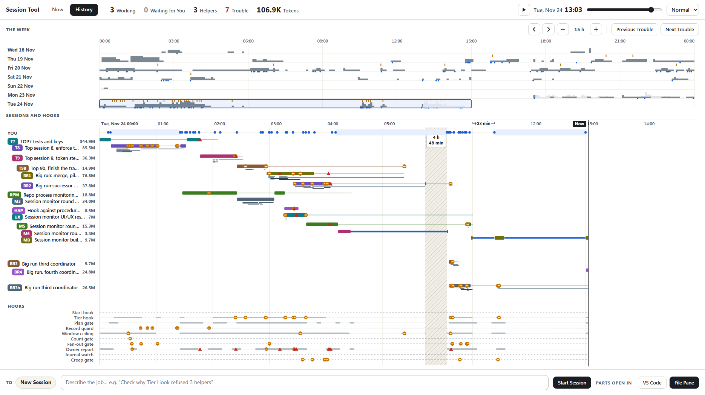

The four prototypes, and what I propose to keep
All four open, respond to every main control and replay smoothly. None is right alone. The best final takes the map from Impeccable, the operating card from UI UX Pro Max, the day strip from UX Designer and the "since you left" line and tags from the Vercel guidelines.
Proposed final: one part from each
Impeccable The parts as one map
Every hook, helper kind, script, command, store and document is a stop on a line. A session lights the stops it touches. No boxes. Fix: put the session's tag on each lit stop, so no colour matching.
UI UX Pro Max The waiting session, answered in place
Its question in full, quick answers, a box, Answer and Stop on one card at the top of the list. Sessions ordered: needs you, working, quiet, ended.
UX Designer The whole day as one strip
Starts as flags, "nothing ran 4 h 40 min" hatched, "you were away 1 h 37 min" as a band, trouble marks, a playhead to drag back.
UI UX Pro Max Each hook as a row on the same clock
Let through, refused, failed, in time, beside the sessions. "Never fired" said plainly.
Vercel Since you left, and who is on each part
One line: started, finished, refused, failed since 03:25. Session tags inside each part, trouble on the part itself.
UX Designer Answer from anywhere, jump to anything
"UX waits for you · Answer" stays in the header on both pages. Press / to jump to any session or part. Stop asks, then offers Undo.
History keeps Pro Max's week as heat strips with the peak per day, Impeccable's labelled "you away" bands and tokens per session, and Vercel's Previous / Next trouble.
The four, one by one
Impeccable A transit map of the parts


Good
- The only one that is a picture, not a board of boxes
- Two sessions on one part show as a double ring
- Top ribbon: last 3 hours unbroken, with "you 03:25" and what changed since
- History: "you away 6 h 21 min" written on the band; tokens per session
Not good
- Which session lit a stop is told by colour only; hard to match
- Hooks show no history on Now, only a badge count
- The waiting question is cut short in the card
- Long grey lines of unused stops
UI UX Pro Max Sessions by need, hooks over time


Good
- Best waiting card: full question, quick answers, Answer, Stop
- One row per hook on the sessions' clock
- Week as heat strips with "peak 3 · 10 helpers" per day
- Quiet stretches carry their length ("quiet 56 min")
Not good
- Parts are four panels of boxes on dotted grey: the old complaint
- Six counters plus replay controls crowd the top bar
- Right column runs off the screen; History is taller than the screen
- VS Code / file pane switch hidden in a menu; builder never click-tested it
UX Designer Hook tiles, session tree, day strip


Good
- Each hook a tile with its own hour of bars and session tags
- Day strip: gaps, starts, "you were away", trouble, all at once
- Waiting pill in the header; / to jump anywhere
- Stop asks, then Undo
Not good
- Session tree leaves large empty beige patches
- Parts are a grid of chips with tiny dots for sessions
- Beige on beige; little contrast between areas
- Its own self-test: 8 of 34 checks failed (zoom, filters)
Vercel guidelines Clean board of named tiles


Good
- "Since 03:25": started, finished, refused, failed in one line
- Session tags printed inside each part; trouble on the part
- Uses the whole screen evenly
- History: Previous / Next trouble buttons; links that keep the state
Not good
- Still 79 boxes; small text at 89 %
- The 3-hour river is thin and dense
- Hook tiles mostly empty white
- Its own review of the code was not run